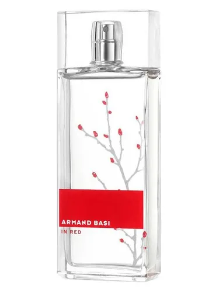

In Red
- Para mujer
- Familia cítrica
- Lanzado en 2003
$1,899
Precio de referencia. Te confirmamos el precio final y la presentación por WhatsApp antes de enviar.
Por encargo: lo conseguimos para ti
Cómo huele
Cítrico
Especiado cálido
Amaderado
Floral blanco
Aromático
Sus notas
Salida
bergamotajengibrenaranja mandarinacardamomo
Corazón
liriojazmínhoja de violetapimienta rosarosapeoníagrosella negra
Fondo
notas amaderadasmusgo de roblealmizcle blancopalisandroámbarvainillapraliné
In Red de Armand Basi es un perfume cítrico para mujer, lanzado en 2003. Abre con bergamota y jengibre, en el corazón tiene lirio y jazmín y deja un fondo de notas amaderadas y musgo de roble. Lo que más se siente: cítrico, especiado cálido y amaderado.